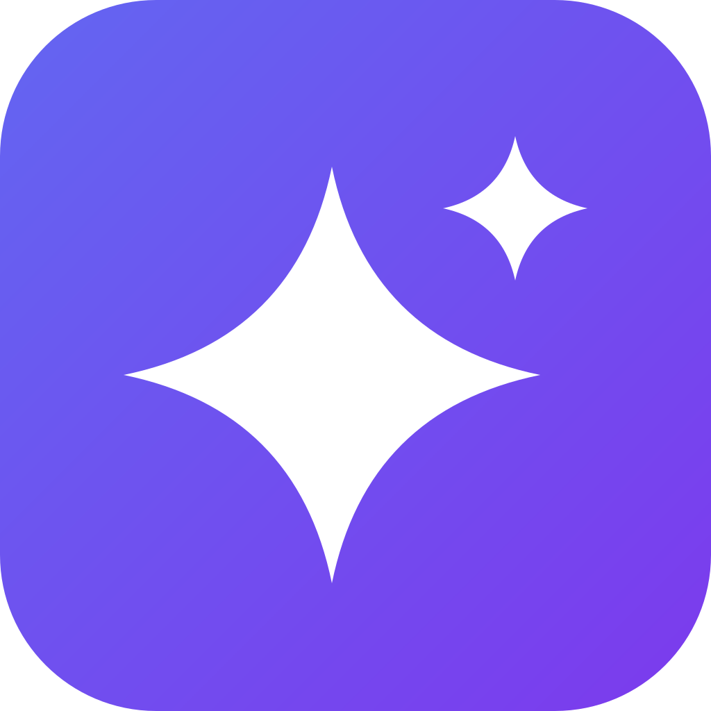

Perencana Ahli Pertama · Bappeda Aceh Tenggara
Platform konsultasi AI + generator dokumen untuk ASN se-Indonesia. Susun Renja OPD, LKjIP, Perjanjian Kinerja, Renstra, hingga RKPD — sesuai regulasi terbaru, gratis.
Tentang Saya
Saya terlibat langsung dalam siklus perencanaan daerah — dari penyusunan RPJMK, RKPD, review teknis dokumen OPD, hingga koordinasi lintas 51 OPD di Aceh Tenggara.
Bidang Keahlian
Dari dokumen strategis jangka panjang hingga sub kegiatan operasional harian OPD.
Layanan
01
Pendampingan teknis penyusunan RPJMK, RKPD, Renstra, dan dokumen perencanaan daerah sesuai regulasi terkini.
02
Telaah Renja, DOKA, KAK, RAB OPD untuk memastikan konsistensi, kelengkapan, dan kepatuhan regulasi.
03
Koleksi template Renstra, Renja, KAK, RAB, Berita Acara dalam format Word & Excel siap pakai.
04
Workshop praktis penyusunan dokumen perencanaan, SIPD-RI, dan pengembangan indikator kinerja.
05
Formulasi IKU, IKD, IKK, dan cascading pohon kinerja dari level Bupati hingga sub kegiatan OPD.
06
Analisis kebijakan publik daerah, ulasan regulasi perencanaan terbaru, dan panduan teknis untuk ASN.
AI Tools Eksklusif
Delapan tools berbasis kecerdasan buatan yang dirancang khusus membantu ASN perencana bekerja lebih cepat dan lebih tepat.
AI Asisten · Renja OPD
Susun Renja OPD lebih cepat dengan bantuan AI.
AI Asisten · RKPD
Bantu penyusunan RKPD dari isu strategis hingga program prioritas.
Tanya langsung ke AI ahli perencanaan daerah — RKPD, Renja, Renstra, indikator, RAB, SAKIP, regulasi terbaru.
Isi formulir, langsung dapat dokumen resmi — PK bertingkat, SKP, Telaahan Staf, Berita Acara, sesuai sistematika regulasi, siap cetak.
Buat LKjIP lengkap dengan wizard 5 langkah — isi data dan realisasi IKU, AI narasi analisis capaiannya. Export Word & PDF siap cetak.
Buat Kerangka Acuan Kerja (KAK/TOR) lengkap — masukkan identitas kegiatan dan pagu, AI narasi latar belakang dan metodologinya.
Buat Nota Dinas, Telaahan Staf, atau Memorandum — isi pokok masalah dan opsi, AI menyusun analisis dan rekomendasi secara formal. Export Word & PDF.
Buat Berita Acara rapat, serah terima, pemeriksaan, atau musyawarah — lengkap daftar peserta dan kolom tanda tangan. Export Word & PDF.
Template Dokumen
Format Word & Excel profesional, sesuai regulasi terbaru, gratis untuk semua ASN Indonesia.
Paket Layanan
Semua tools tersedia gratis (demo). Upgrade ke Berbayar untuk hasil dokumen lengkap tanpa batas, API key sudah termasuk.
Gratis
Rp 0
selamanya
Kredit
Rp 5.000
per kredit · paket mulai Rp 25.000
Lihat perbandingan lengkap → Halaman Harga
Blog & Artikel
Tulisan berbasis pengalaman lapangan — tentang regulasi, metode, dan praktik terbaik perencanaan pembangunan daerah Indonesia.
Layanan Lainnya
Saya juga menerima jasa pembuatan website profesional — desain modern, SEO-ready, hosting gratis. Mulai dari Rp 750rb.
Lihat Jasa Pembuatan Website →Konsultasi
Hubungi saya untuk konsultasi pertama. Saya siap membantu Anda menyusun dokumen yang tepat, efisien, dan sesuai regulasi.